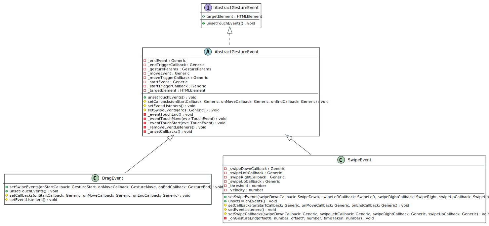

Class AbstractGestureEventAbstract
Hierarchy-Diagram
{kind=link}
Legend
 class
class
 abstract class
abstract class
 interface
interface
 public property
public property
 private property
private property
 public method
public method
 protected method
protected method
 private method
private method
italic
abstract property/method
Hierarchy
- AbstractGestureEvent
Implements
Index
Properties
Constructors
Methods
Accessors
Properties
Private _end
Private _end
Private _gesture
_gesture
Private _move
Private _move
Private _start
Private _start
Private _target
_target
Constructors
constructor
- new
Abstract Gesture Event(target: HTMLElement): AbstractGestureEvent -
Parameters
-
target: HTMLElement
Returns AbstractGestureEvent
-
Methods
Private _event
Private _event
Private _event
Private _remove
Private _unset
Protected set
Protected set
unset
Protected Abstract set
Accessors
target
- get targetElement(): HTMLElement
-
Get the targetElement
Memberof
GestureEvent
Returns HTMLElement
Class that represents the gesture events.
Export